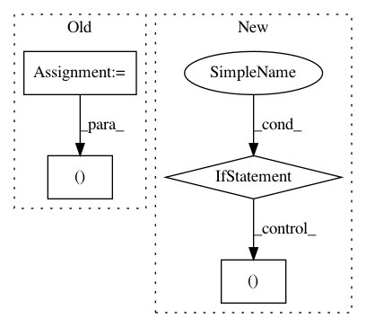

7856d22b09561e33522bdc0bd00218ae75b84bd7,softlearning/algorithms/sac.py,SAC,_init_critic_update,#SAC#,232
Before Change
self._qf2_t = self._qf2.output_for(
self._observations_ph, self._actions_ph, reuse=True) // N
self._td_loss1_t = tf.losses.mean_squared_error(
labels=q_target, predictions=self._qf1_t, weights=0.5)
self._td_loss2_t = tf.losses.mean_squared_error(
labels=q_target, predictions=self._qf2_t, weights=0.5)
qf1_train_op = tf.contrib.layers.optimize_loss(
self._td_loss1_t,
self.global_step,
learning_rate=self._qf_lr,
optimizer=tf.train.AdamOptimizer,
variables=self._qf1.get_params_internal(),
increment_global_step=False,
name="td_loss_1_optimizer",
summaries=([
"loss", "gradients", "gradient_norm", "global_gradient_norm"
] if self._tf_summaries else []))
qf2_train_op = tf.contrib.layers.optimize_loss(
self._td_loss2_t,
self.global_step,
learning_rate=self._qf_lr,
optimizer=tf.train.AdamOptimizer,
variables=self._qf2.get_params_internal(),
increment_global_step=False,
name="td_loss_2_optimizer",
summaries=([
"loss", "gradients", "gradient_norm", "global_gradient_norm"
] if self._tf_summaries else []))
self._training_ops.update({
"qf": (qf1_train_op, qf2_train_op)
})
def _init_actor_update(self):
Create minimization operations for policy and state value functions.
After Change
variables=self._q_functions[i].get_params_internal(),
increment_global_step=(i == 0),
name="q_loss_{}_optimizer".format(i),
summaries=((
"loss", "gradients", "gradient_norm", "global_gradient_norm"
) if self._tf_summaries else ()))
for i, q_loss in enumerate(q_losses))
self._training_ops.update({"qf": tf.group(q_training_ops)})
In pattern: SUPERPATTERN
Frequency: 4
Non-data size: 4
Instances
Project Name: rail-berkeley/softlearning
Commit Name: 7856d22b09561e33522bdc0bd00218ae75b84bd7
Time: 2018-09-09
Author: kristian.hartikainen@gmail.com
File Name: softlearning/algorithms/sac.py
Class Name: SAC
Method Name: _init_critic_update
Project Name: rail-berkeley/softlearning
Commit Name: b6dcbf921111667f653d95c2e46fd93b6f23b6c9
Time: 2018-05-22
Author: kristian.hartikainen@gmail.com
File Name: examples/real_nvp_2d_rl_example.py
Class Name: RealNVP2dRlExample
Method Name: run
Project Name: YerevaNN/mimic3-benchmarks
Commit Name: 1760b8db5de339e12682f79111886b3b7e30d73c
Time: 2018-03-26
Author: harhro@gmail.com
File Name: scripts/create_length_of_stay.py
Class Name:
Method Name: process_partition
Project Name: rail-berkeley/softlearning
Commit Name: 0b47129713e8cd63c49a0c53202f2b3deac941cc
Time: 2018-07-09
Author: azhou42@berkeley.edu
File Name: softlearning/policies/latent_space_policy.py
Class Name: LatentSpacePolicy
Method Name: get_action